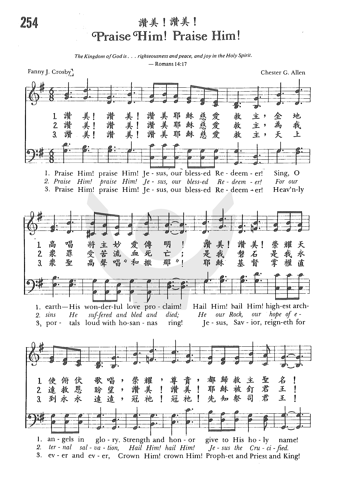
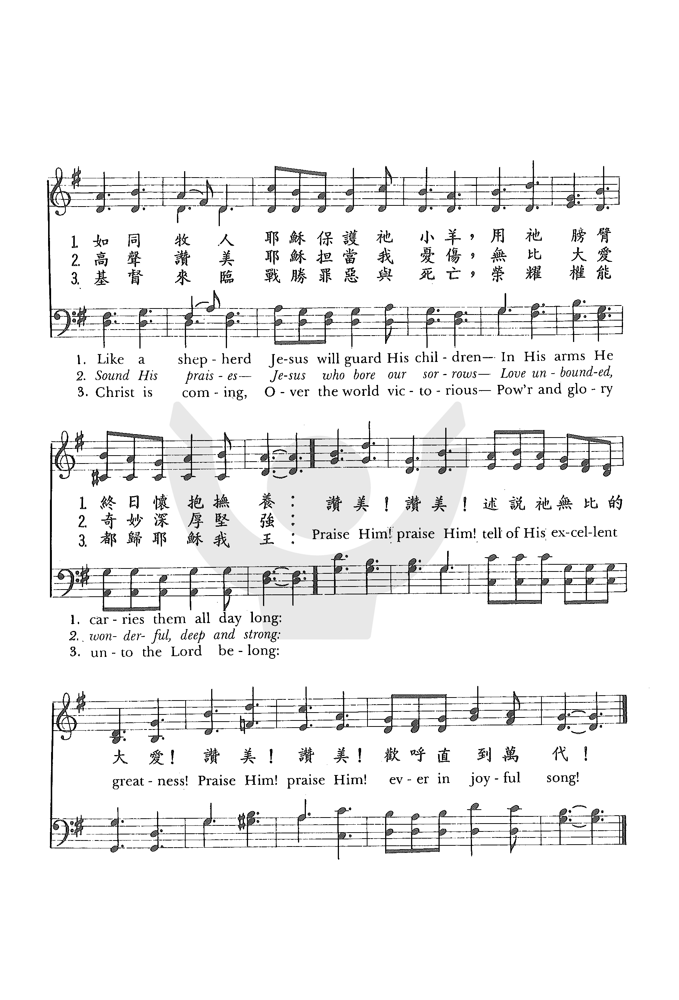

1250
Praise Him Praise Him 赞美！赞美！
_Crosby
210赞美耶稣
▲
|
|
|
|
1 Praise him, praise him! Jesus, our blessed redeemer!
Sing, O earth, his wonderful love proclaim!
Hail him, hail him! Highest archangels in glory!
Strength and honor give to his holy name!
Like a shepherd, Jesus will guard his children.
In his arms he carries them all day long.
Refrain:
Praise him! Praise him! tell of his excellent greatness.
Praise him! Praise him! ever in joyful song.
2 Praise him, praise him! Jesus, our blessed redeemer!
For our sins, he suffered, and bled, and died.
He our rock, our hope of eternal salvation,
hail him, hail him! Jesus, the crucified.
Sound his praises, Jesus who bore our sorrows,
love unbounded, wonderful, deep, and strong. [Refrain]
3 Praise him, praise him! Jesus, our blessed redeemer!
Heav’nly portals loud with hosannas ring!
Jesus, Savior, reigneth forever and ever!
Crown him, crown him! prophet, and priest, and king!
Christ is coming, over the world victorious.
Pow’r and glory unto the Lord belong. [Refrain]
Source: Voices
Together #100
|
1.赞美！赞美！耶稣我亲爱的救主；
全地歌唱将主妙爱传明！
天上群众齐赞美慈悲的救主；
尊贵、荣耀都归主圣善名！
如同牧人，耶稣保护他小羊；
主的膀臂，终日怀抱牧羊。
赞美！赞美！传扬他无比的大爱；
赞美！赞美！歌唱直到万代！
2.赞美！赞美！耶稣我慈悲的救主；
为我众罪受苦流血死亡；
主是磐石，是永远救恩的盼望，
赞美！赞美！耶稣被钉君王。
高声歌唱，因主担当我愁闷，
无限慈悲，何奇妙何高深！
赞美！赞美！传扬他无比的大爱；
赞美！赞美！歌唱直到万代！
3.赞美！赞美！耶穌我永远的羔羊；
天上群众和散那歌高唱！
耶稣救主做我们和平的君王，
加冕上主先知祭司牧长！
基督降临，战胜罪世威德煌！
荣耀权能，都归耶稣我王；
赞美！赞美！传扬他无比的大爱；
赞美！赞美！歌唱直到万代！
|
|
https://www.zanmeishige.com/tab/25612.html?songbook=1&index=254


|
|
|
|
1250
Praise Him Praise Him 赞美！赞美！

简介（一）
（来源：《岁首到年终》）
但愿人因耶和华的慈爱，和祂向人所行的奇事，都称赞祂。（诗 107:8）
我们当赞美主，因为这正是祂创造我们并救赎我们的原因。赞美的大能，不但能化解一切忧虑、压力、重担、困难，同时也能使我们为神所允许的一切遭遇，发出喜乐的感恩之情。
保罗说：「凡事谢恩。因为这是神在基督里向你们所定的旨意。」（帖前
5:18）许多时候，我们实在太现实了，只有在领受各种属灵和身心的祝福时才懂得感恩；然而，神的旨意却是要我们无论处顺境或逆境，遭遇如意或不如意的事，都要凡事谢恩。 在凡事顺利时赞美是很容易的，然而神要祂的儿女以感谢为祭献上。当我们赞美，便是荣耀祂的名！（诗
50:23）
这首著名的赞美诗是出自盲女诗人 Fanny J. Crosby 的作品。
当她生下来才六周，就因大夫误诊导致失明。照理说，她是最有资格埋怨、憎恨的人，但是从她心中却发出赞美的歌声，叫我们这些想去安慰她的人，反觉惭愧。她于 1820 年
3 月生于纽约，一生共写诗八千多首。这首「赞美耶稣」最早见于 1869 年出版的主日学诗集「Bright Jewels」内。原诗名为「赞美，献上感恩」。
1 赞美！赞美！耶稣我亲爱的救主；全地歌唱将主妙爱传明！
天上群众齐赞美慈悲的救主；尊贵、荣耀都归主圣善名！
如同牧人，耶稣保护祂小羊；主的膀臂，终日怀抱牧养；
2 赞美！赞美！耶稣我永远的羔羊；天上群众和散那歌高唱！
耶稣救主做我们和平的君主，加冕上主先知祭司牧长！
基督降临，战胜罪世威德煌！荣耀权能，都归耶稣我王；
（副歌）
赞美！赞美！传扬祂无比的大爱；
赞美！赞美！欢唱直到万代！
＊崇拜神是外表和内心两方面的事，就是，一面表示承认上帝的恩赐，一面又感谢祂。 ── 马丁路德
简介（二） （摘自：《赞美诗（新编）史话》）
经文：“主啊，求你使我嘴唇张开，我的口便传扬赞美你的话”（诗51：15）。
作者女盲诗人克罗斯比(F.J.Crosby,1820-1915)。克氏生下来6个月时因庸医误诊而双目失明，使她无法欣赏青山绿水、春花秋月的美丽。但她那颗纯洁的心灵，虔诚的信仰，使她心灵的慧眼，却能欣赏那属天无穷无尽的美景，不断写出优美动人、激励人心的诗歌。
克罗斯比幼年时在纽约最早的一所盲童学校就学。少年时代就开始写诗，24岁时出版了《盲女与她的诗》，得到美国文坛的重视。但1850年的灵性奋兴的经验，使她集中全力专写圣诗，后在福音圣诗作曲家和编辑者雷德伯里的鼓励下，决心终身专写圣诗，并与纽约一家出版社订立合同，每周写圣诗三首，结果写了5929首；此外，她还为布利斯写525首，为桑基写237首，为劳里写219首，为多恩写1500首。她一生写了共达8440首圣诗，堪称为最最多产的圣诗作家。
克罗斯比于1858年与盲童学校教员范。阿尔斯丁（Alstyne)结婚，生活非常美满。她从未因眼睛失明而怨天尤人，她曾愉快地写道：
我的心灵何其快乐，虽我目已失明，我仍坚决在这世上，作个知足的人；
许多幸福我能享受，他人无法得到， 我决不会因我目盲，痛苦悲伤哀号。
当她于1901年开始写《自传》的时候，那种快乐心情仍不减当年。她说：“我现在活到了80岁，从来没有一刻怀恨过那位医生。因为我自壮年至今，就相信仁慈的主，藉着他无限慈爱和奇妙旨意，用这种方法将我分别为圣，使我直到今天还能有机会作主所指派给我的事工。”这种快乐、短路的精神和坚定的信仰，使她一直活到1915年，享寿95岁。
结合作者的一生，我们就更能唱出赞美耶稣慈爱的深远意义和作者响应诗篇中的祷词：“求你使我嘴唇张开，我的口便传扬赞美你的话”（诗51：15）。
这首诗所用的曲调乃艾伦（C.G.Allen,1838-1878）①所谱。他是美国音乐家，曾与布雷德伯里，多恩等人合编过多本教会音乐集。这首曲谱最初见于他们所编的供主日学用的乐谱《明珠》一书，当时就是配上这首诗的。以后美国南浸会赞美诗编入这首诗时，调名定为《快乐之歌》沿用至今。[/dropdown_box]
https://www.xueshengshi.com/?p=1199
INTRO.:
Because of who and what He is, we should praise the Lord God of heaven and
earth. "Therefore by Him let us continually offer the sacrifice of paise to God,
that is, the fruit of our lips, giving thanks to His name" (Heb. 13.15). This
continual sacrifice of praise to God should include joyful songs to His Son,
Jesus Christ for what He has done for us. One song which does exactly that is
"Praise Him! Praise Him!" (#54 in Hymns
for Worship Revised, and #11 in Sacred
Selections for the Church).
The text was written by Mrs. Frances Jane Crosby VanAlstyne, better known by her
maiden name Fanny J. Crosby (1820-1915). Perhaps one of the best known gospel
song writers of late nineteenth century America, she may possibly be one of the
greatest writers of gospel songs who has ever lived. Although blind from the age
of six weeks, she began with poems for popular ballads. After marrying Alexander
VanAlstyne in 1858, she turned from secular to sacred song and at one period in
her life she was under contract to the Biglow and Main Co. to produce three
hymns a week.
"Praise Him! Praise Him!" first appeared under the title "Praise, Give Thanks,"
in 1869, with the tune (Joyful Song) composed by Chester G. Allen, who was born
in 1838. In spite of the popularity of this melody, there is very little
information about this composer besides the fact that he worked with William B.
Bradbury, William H. Doane, William F. Sherwin and others in the production of
several Sunday school songbooks, such as Bright
Jewels in which this song was originally published, for Biglow
and Main. Allen died in 1878.
Among hymnbooks published by members of the Lord’s church during the twentieth
century for use in churches of Christ, his song appeared in the 1937 Great
Songs of the Church No. 2 edited by E. L. Jorgenson; the 1963 Abiding
Hymns edited by Robert C. Welch; the 1963 Christian
Hymnal edited by J. Nelson Slater; the 1965 Great
Christian Hymnal No. 2 edited by Tillit S. Teddlie; and the
1978 Hymns
of Praise edited by Reuel Lemmons. Today it may be found
in the 1971 Songs
of the Church, the 1990 Songs
of the Church 21st C. Ed., and the 1994 Songs
of Faith and Praise all edited by Alton H. Howard; the
1978/1983 Church
Gospel Songs and Hymns edited by V. E. Howard; the 1986 Great
Songs Revised edited by Forrest M. McCann; and the 1992 Praise
for the Lord edited by John P. Wiegand; in addition to Hymns
for Worship, Sacred
Selections, and the 2007 Sacred
Songs of the Church edited by William D. Jeffcoat.
It gives several reasons for praising Christ.
I. According to stanza 1 we should praise Him because He is our Shepherd.
"Praise Him! praise Him! Jesus, our blessed Redeemer!
Sing, O earth, His wonderful love proclaim!
Hail Him! hail Him! Highest archangels in glory;
Strength and honor give to His holy name!
Like a Shepherd, Jesus will guard His children;
In His arms He carries them all day long."
A. Jesus is our blessed Redeemer in that because of His wonderful love for us,
He redeemed us to God: Rev. 5.9
B. Therefore, even the highest archangels in glory hail Him and give strength
and honor to His holy name: Heb. 1.5-6
C. Not only is He our Redeemer, but He is also our Shepherd who guards His
flock: Jn. 10.14-16
II. According to stanza 2 we should praise Him because He is our hope of
salvation
"Praise Him! praise Him! Jesus, our blessed Redeemer!
For our sins He suffered and bled and died;
He, our Rock, our Hope of eternal salvation;
Hail Him! hail Him! Jesus, the crucified!
Sound His praises, Jesus who bore our sorrows,
Love unbounded, wonderful, deep, and strong."
A. Jesus suffered and bled so that through His blood He might wash us from our
sins: Rev. 1.5-6
B. Therefore, by His crucifixion He offers us the hope of eternal salvation:
Heb. 5.8-9
C. In doing this, He fulfilled the Old Testament prophecies of the Messiah who
would come to bear our sorrows: Isa. 53.3-5
III. According to stanza 3 we should praise Him because He is our Prophet and
Priest and King
"Praise Him! praise Him! Jesus, our blessed Redeemer;
Heavenly portals loud with hosannas ring!
Jesus, Savior, reigneth forever and ever;
Crown Him! crown Him! Prophet, and Priest, and King.
Christ is coming! over the world victorious;
Power and glory unto the Lord belong."
A. Just as the people cried Hosanna in the highest to Christ on earth (Matt.
21.9), so heavenly portals ring loud with praises to Him: Rev. 5.8-12
B. Sacred
Selections changes "reigneth forever and ever" to "liveth
forever and ever," probably because the editor thought that the concept of
Christ’s reigning forever smacked of Premillennialism; however, the Bible
specifically says of Christ that "He shall reign forever": Rev. 11.15; if the
Bible says that He shall reign forever, then I do not see why we should have a
problem singing that He shall reign forever. Sacred
Selections also changes "Crown Him" to "Praise Him," again
with the apparent objection that the idea of our crowning Christ must be
premillennial since Jesus has already been crowned King. It is true that Christ
has been crowned King and is now on His throne, but our crowning Him is simply a
poetic way of saying that each one of us must acknowledge Him as the King of
Kings and Lord of Lords in our own hearts: Rev. 19.11-16
C. So, we crown Him now as the King of our hearts and the Lord of our lives,
but we also look forward to that time when He will be coming, over the world
victorious, just as was promised in the scripture: Acts 1.9-11
CONCL.:
The chorus completes the thought of each stanza:
"Praise Him! praise Him; tell of His excellent greatness;
Praise Him! praise Him, ever in joyful song."
Surely, Jesus, as the divine Son of God and Savior of the world, is
characterized by excellent greatness (Ps. 150.1-2). Therefore, He is worthy of
every good thing that we might say about Him as we "Praise Him! Praise Him!"
https://hymnstudiesblog.wordpress.com/2008/10/16/quotpraise-him-praise-himquot/
Palm Sunday is
the day we remember the "triumphal entry" of Jesus into Jerusalem,
exactly one week before His resurrection (Matthew
21:1-11).
Some 450-500 years earlier, the Prophet Zechariah had prophesied,
"Rejoice greatly, O daughter of Zion! Shout, O daughter of Jerusalem!
Behold, your King is coming to you; He is just and having salvation,
Lowly and riding on a donkey, A colt, the foal of a donkey" (Zechariah
9:9). Matthew
21:7-9 records
the fulfillment of that prophecy: "They brought the donkey and the colt,
laid their clothes on them, and set Him on them. And a very great
multitude spread their clothes on the road; others cut down branches
from the trees and spread them on the road. Then the multitudes who went
before and those who followed cried out, saying: 'Hosanna to the Son of
David! Blessed is He who comes in the name of the LORD!' Hosanna in the
highest!'" It was day in which He was welcomed as King, one week before
they crucified Him like a common criminal.
And so today I've chosen a familiar hymn which brings praise to the one
who was Prophet, Priest, and King - our Redeemer. It was written by the
blind Fanny Crosby, probably the most prolific hymnist in history.
Though blinded by an incompetent doctor at six weeks of age, she wrote
over 8,000 hymns. About
her blindness, she said: "It seemed intended by the blessed providence
of God that I should be blind all my life, and I thank him for the
dispensation. If perfect earthly sight were offered me tomorrow I would
not accept it. I might not have sung hymns to the praise of God if I had
been distracted by the beautiful and interesting things about me." But
she did write many great hymns of praise to her Redeemer which believers
have sung to the praise of God over the years. So join in sharing one of
Fanny's hymns of praise as we begin this week in which we celebrate the
crucifixion and the most important event in history - the Resurrection.
http://barryshymns.blogspot.com/2011/04/praise-him-praise-him.html
 (2013-06-18
15:32:28)
(2013-06-18
15:32:28)
芬尼克罗斯贝(以下简称芬尼)是教会中有名的失明诗人。她在出母胎以后几个礼拜，就瞎眼了。虽遭遇到这样的不幸，却成了一位灵命极其丰富，被神所用的使女。她写了许多极美的诗歌，直到今日，仍旧在教会中，被千万圣徒所宝贵、所歌颂，成了神给教会极大的祝福。
一八二○年三月二十四日，芬尼生于纽约普兰镇的一个穷苦家庭中。她的父母虽然出身卑微，却都是敬虔的基督徒；全家热切爱主。在她还不到一岁的时候，父亲就去世了，她母亲因事情太忙所以请祖母来家照顾这盲眼的女孩。芬尼从小就喜欢坐在祖母的膝上，听她讲故事。她的祖母常告以神所创造的这个宇宙，是何等的奇妙、广大和美丽！虽然知道孙女永远不能用肉眼来欣赏大自然的美丽，但是她却看出在这个小女孩的里面，有一个何等聪明的心灵！她盼望芬尼从小就运用这灵敏的感觉，来了解这宇宙的奇妙。藉着她祖母的教导，芬尼有了日出和日落的观念。她知道有闪烁的星辰，在长夜照耀；有银色的月光，绕地而行。她也知道有各色各样的云彩、白日的云、雨前的云、和雨后的彩虹。她也明白彩虹是神和人类立约的记号。
她的祖母是一位非常爱主的姊妹，并且也相当的认识主。当她祖母抱她在膝盖上时，不仅把四围神创造的美丽，讲给她听，更把神的大爱、主的救赎和圣经的奇妙，灌输在她的心里。所以芬尼在很小的时候就有了重生的经历，且喜欢和主有亲密的交通。她深深的被救主十架舍命的大爱所感动。这个爱火在她里面，越来越大；或许和她的眼瞎有关，因为她不能和外面的环境接触，所以她爱主的心是那样的单纯、真挚和热切。她看不见别的事物，只有救主藉着圣灵，将她自己的美丽，启示在她心里，因她整天用这样长的时间，在幔内和主交通，所以她从主直接所得着的认识和启示，不是一些从人得教导者所能比拟的。她的祖母也把圣经读给她听，所以她从小就记得许多很长的经文。她祖母说：“孩子，你纵然不能像我一样，从书案上取出圣经来读，可是你能将许多经节——神的话，丰丰富富的珍藏在心里。以后你无论到哪里去，这些神的话都要随着你，比一切财物更宝贵，要成为你用不尽的宝藏。”由于这种鼓励，她更加用心背诵圣经。后来她能背诵许多的诗篇，全本箴言和路得记，以及大部分的新约圣经。至于旧约圣经的故事，她也大多能背诵。她所下的工夫，对她以后一生的事奉，有深刻的影响，这些宝贵的圣经，成了她一生享用不尽的财富。论到圣经，她曾写下这样的诗句：
我所尊敬的书，你给我多少喜乐和安慰，
我童年的良伴阿，你对我比宝石还尊贵。
她因为眼睛的缘故，不能进普通学校读书，但是她从小就有写诗的天才，心中常想：若有机会能读书就好了。可是附近并没有盲人学校，在远处的学校，收费都很贵，绝非她这个穷苦的家庭所能负担的。但是芬尼从小知道信靠救主，在祷告中向主说明她心中的愿望。她相信神能做人看为不可能的事。虽然经过很长的时间，她的祷告好像没有蒙主应允，但她一点不灰心，就是这样的倚靠救主，相信救主，知道主爱她，从来不怀疑，一直向神祈求。忽然，有一天，一个陌生人从波士顿到这里来考察，看见芬尼所写的诗，觉得非常的惊讶，所以就帮助她，入一所盲人学校读书。她以大部分的时间研究音乐和文字；毕业以后，留校教书有十一年之久。在她教书的时候，学生们都非常的爱她，她也把救主的大爱传播在这些学生的心田里。许多年轻失明的孩子都因着她而清楚地蒙恩。凡因着和她接触而得救的人，都有一个相同点，就是和她一样地热爱救主，而且也都喜欢和主交通。主藉着她在那学校里成为一个很大的影响力。以后她又到各地教会作见证，也最喜欢在贫穷的人中传福音。
到了年长，灵命相当的成熟时，她常常在散会的时候，坐在那里，许多年轻的孩子，从她身边走过，她就一个一个用手摸摸他们，或者亲一亲他们的脸颊。凡是和她接触的人常说，她给他们的感动，圣灵藉她所流出来的膏油，是他们一生所不能忘记的。许多冷淡的基督徒只要经过芬尼用手和他们一接触、一抚摸，就会站在那里流泪，主的爱在他们心中如死灰复燃，使他们得着复兴。虽然如此，芬尼的一生给教会最大的贡献和服事，仍是她所写的诗歌。其中有很多实在是圣灵的声音，也是她一生中与主交通所得着的经历，和她对主认识的流露。她的诗歌，在教会中间所产生的影响力，比她自己有生之年，不知道要大过多少倍。
在她年老的时候，她在教会中已是个相当有名的使者。虽然她处境好像很寂寞，但是主的爱使她有不能禁止的快乐。这喜乐的泉源，一直在她心里涌流出来。有一天，当她一个人正在那里坐着，一个愉快的声音呼喊她说：“芬尼，刚才邮差送来一封你的信。”“从哪里来的呢？”她问着，一面仍不住地织毛衣。那位姊妹说这上面有一张英国的邮票，“快为我念吧！”她丢下了毛衣，往摇椅上一靠，等着要听那从海外来的信息：“啊！这是一首长的诗歌。”这位姊妹说。原来是一位在英国被主大用的姊妹海弗格尔(FrancesR.Havergal)所写给她的。那首诗开头是这样的：“盲眼的诗人在海那边，歌词充满涌流的喜乐，美丽的歌声四处传播，如同晚星从上降落，请问诗人既是盲眼，何能如此快乐？”当这位姊妹正念时，芬尼静坐在椅上，愉快的笑了，因她知道在海那边的姊妹，实在了解救主在芬尼心中成为她喜乐的秘密泉源，并且也知道她的诗在英国十分受人欣赏。像海弗格尔姊妹这样的知音，给她无限安慰。
有一次，她在教会中讲道，一位中年姊妹，在会后到她面前来，她就抱着她亲她说：“但愿救主的爱能在你心里燃烧！”这位女士就哭起来了说：“二十年前，当我还是一个孩童的时候，也是在聚会之后，我的母亲把我带到你面前，你亲亲我的脸颊；那时，主的爱就像电流一样进到我的心里。我不仅蒙了重生，而且这爱燃烧在我里面二十年，一直不停顿，这是我第二次遇到你。”可见她感动人的力量是何等地深厚！又有一次，在一个炎热的夏天，她被请到纽约市百威礼教堂讲道。虽然她见不到听众，可是她的感觉非常敏锐，她觉得圣灵向她指出，听众中有一位年轻人，原是从基督教家庭中长大的，但不久前背弃了自己的信仰，偏离真道；所以她讲完道后，就顺着里面的感动说：“在今夜听见这信息的人中，如果有一位青年，离弃他母亲的教训，走上灭亡的道路，我希望聚会后能和他交通。”她说了几遍，果然有一位十八岁的青年人，到前面来，对她说：“你不是指着我吧！”接着就哭泣着承认：当他母亲将死时，曾应许与他在天堂相会，但是，他现在却选择了另外一条道路，学会了犯罪作恶，成为一个沉沦灭亡的人。芬尼拥抱着他，和他亲切地谈到救主，和他一起跪着祷告，直到他深信他的罪蒙了主的赦免，主的爱充满了他的心，他才带着洋溢的大爱回去。那天晚上，回家之后，芬尼自己也被圣灵的爱大大感动，就写了一首有名的诗歌，题目是〈拯救亡灵〉(“RescuethePerishingCarefortheDying”)。这首诗歌，也成了她所写诗歌中很有名的一首，和其他几首，如：〈耶稣是我的，我有把握〉、〈莫把我漏掉〉、〈安稳在耶稣手臂〉，都成了教会历世历代的祝福。
有一天晚上，在非洲沙哈拉沙漠，有一位旅客听见远处营火中有土人的歌声。他素来怕这一带野蛮的土人，可是仔细听他们所唱的竟是赞美诗！那种甜美的声音使他不禁催促他的骆驼前去，因为他们所唱的正是芬尼所写的圣诗。虽然这些人外面的样子看起来非常可怕，但是从他们的歌声中他知道他们已经蒙了主的救恩。芬尼的诗歌，实在是深入世界各族各方之中。
她享年九十四岁，死于一九一五年二月十二日。曾嫁给一位盲眼的音乐家CanaAlstyne，所以她的全名是Mrs.FannyJ.CrosbyAlstyne。
【诗歌介绍】
芬尼所写的诗歌，有两大类：头一类诗歌是说到和主的交通、对主的倚靠。在这一类和主交通的诗歌中，很少有人写得比她好的。
另外一类说到因着救赎的大爱，因着看见十架救赎的工作，她对罪人产生热爱，迫切地想拯救灵魂，这两类是她诗歌的特点。现在我们把她所写的八千多首诗歌中最有名的一些代表作介绍于后：
—、《有福确据》 “Blessed
Assurance”
http://www.tudou.com/programs/view/ToCkXhBFtoY/
(一)耶稣是我的，我有把握，
这使我预尝荣耀生活！
已蒙血赎回，已受恩赐，
已由灵重生，作神后嗣。
(二)一完全顺服，完全甘甜，
被提之景象显在眼前。
似乎有声音从天而来，
缠绵说怜悯，耳语述爱。
(三)一完全顺服，所有安息，
与主能交通，一无秘密。
能儆醒等候，仰望主来，
饱足主好处，迷于主爱。
(副)这是我自传，是我诗歌，
赞美我救主，长日不息！
这是我自传，是我诗歌，
赞美我救主，长日不息。
这是芬尼的一首代表诗，是教会中最有名的诗歌之一。在这首诗歌里，你可以用灵触到芬尼和主中间的关系——只有主耶稣是她的信息，是她的诗歌，因为主的爱和喜乐充满她的心，所以才“赞美我救主，长日不息。”三节诗歌说出她三层属灵的经历：第一节说到“已蒙血赎回，已受恩赐，已由灵重生，作神后嗣”，能够叫她预尝将来荣耀的生活。第二节说到顺服的重要，能够叫人享受基督完全的甘甜，和主交通、缠绵。这一切的秘诀，就在于顺服。第三节说到顺服时的安息和交通：“能儆醒等候，仰望主来，饱足主好处，迷于主爱”。这是何等的词句！绝不是人聪明的头脑所能写出来的。
二、《一路引领歌》 “All
the Way My Saviour Leads Me”
(一) 一路我蒙救主引领，陈腐事物何必求？
难道我还疑他爱情，毕生既由他拯救？
神圣安慰、属天生活，凭信我可从他得，
我深知道凡事临我，他有美意不必测。
(二) 一路我蒙救主引领，鼓励我走每步路；
供我灵粮，长我生命，帮助我历每次苦。
旅程虽然力不能支，心灵虽然渴难当，
看哪，面前就是磐石，喜乐活泉可来尝。
(三)一路我蒙救主引领，哦，主大爱何丰满；
不久我到父的家庭，得享应许的平安。
我灵披上荣耀身躯，飞入天上光明处，
我要永远唱此佳句：“蒙他引领我一路。”
这也是芬尼所写的最好的诗歌之一，最能代表她一生的经历，和她诗歌突出的特点。每一节都说到在救主引领之下，我们行走主道路的甜美经历。但在这首诗歌的背后，却是藏着走主道路时，我们常是遇见危险、挫折、损失、艰难(一节)，并且有时候是寂寞、干渴，一次又一次的痛苦和打击使我们天然生命无法忍受(二节)。但这条路并不会太长，我们不能盼望在今生走主道路时能避开这些难处。一切事都在主的引领中，对我们都是最大的益处(三节)。在这样艰苦的环境中，她却一直用正面笔法来写主甜美的恩典。
第一节：在主的路上虽有挫折损失，但主满足了我们的心，“陈腐事物何必求”，“难道我还疑他爱情”，真是好的诗句！接着“神圣安慰属天生活，凭信我可从他得”，因着前一句的自问，引起蒙恩者灵中满有把握的回答。你可以觉得写诗人的灵在这里一直往上升，接着两次重复说：“我深知道凡事临我，他有美意不必测”，以何等强壮而如此有能力的信心来作结束。
第二节：是全诗中最精华的一部分。走主的道路实在需要付出代价。多少次的试炼，多少的打击和痛苦，常使我们感觉力竭身疲，无法再举步往前。但是主在步步艰难的道路上却鼓励我，他如何鼓励我呢？“供我灵粮，长我生命，帮助我历每次苦”，及“看哪！面前就是磐石，喜乐活泉可来尝，”“面前”不是“前面”，何时渴何时就能来喝，何等的经历！何等的诗歌！
第三节：结束在一切遭遇都是主的引领，并且都是主在大爱中引领我们，直到见他，我们一切的痛苦经历都要成为感恩的歌唱：“我要永远唱此佳句，蒙他引领我一路”
三、《述说主耶稣》 http://www.tudou.com/programs/view/MA9ULGp-VSw/
四、《赞美耶稣》 http://www.56.com/u41/v_NTQ4ODIwOTk.html
五、〈我舍一切而要耶稣〉
六、〈救我恩典〉
七、《必须警醒歌》 http://www.tudou.com/programs/view/A8VVXfU-DKE/
八、《速兴起传福音》 Rescue the Perishing
九、《求莫弃我歌》 http://v.youku.com/v_show/id_XMzM1NDc0NjA4.html
十、〈看哪我站在门外叩门〉 Behold
Me Standing at the Door
十—、《今呼召你》 Jesus is
Calling http://v.youku.com/v_show/id_XMzgwMzU4Nzcy.html
十二、《你的罪虽像朱红》 http://www.tudou.com/programs/view/W_yW9i4NhgQ/
十三、《他藏我灵》 http://v.youku.com/v_show/id_XMTkwNjA3MDQw.html
十四、〈主，我是属祢〉
十五、《靠近主》 http://v.youku.com/v_show/id_XNzc0NDIxODQ=.html
十六、〈安稳在耶稣手臂〉
十七、〈是有福祷告良辰〉
十八、《救赎》 Redeemed
十九、〈永不灰心〉
二十、〈救主比生命更宝贵〉 Saviour
More Than Life
这二十首诗歌都是芬尼诗歌中最有名的，并且也是常被圣灵所使用的兵器。
http://blog.sina.com.cn/s/blog_b13ce6ab0101e1or.html
{kind=link}